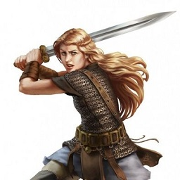
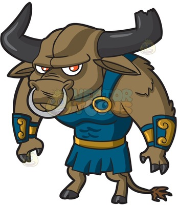
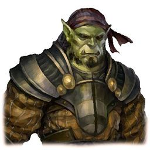
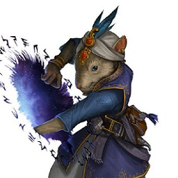
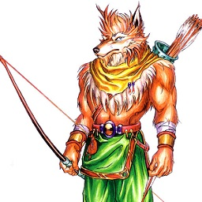
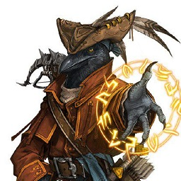

Create Your Character
Choose from a variety of races and classes to create your adventurer. View a selection of the available races and classes below.
Races
Humans
The humans of Aether are a diverse mix of people. Some are fair-skinned and some are dark; some are strong while others are bookish. Compared to other races, humans don't particularly excel in anything, but they are very adaptable.
Ability Scores
Two different ability scores of your choice increase by 1.
Racial Traits
Skills: You gain proficiency in one skill of your choice.
Feat: You gain one feat of your choice.
Lizardfolk

Lizardfolk tend to congregate around wet climates. Islands with an abundance of water crystals will often have a lizardfolk settlement nearby. They are a sturdy folk who exhibit a seemingly emotionally-detached demeanor.
Ability Scores
Your Constitution score increases by 2, and one other ability score of your choice increases by 1.
Racial Traits
Aquatic: You can hold your breath for 15 minutes at a time. You also have a swimming speed of 30 feet.
Bite: Your fanged maw is a natural weapon, which you can use to make unarmed strikes. If you hit with it, you deal piercing damage equal to 1d6 + your Strength modifier, instead of the bludgeoning damage normal for an unarmed strike.
Hungry Jaws: In battle, you can throw yourself into a vicious feeding frenzy. As a bonus action, you can make a special attack with your bite. If the attack hits, it deals its normal damage, and you gain temporary hit points (minimum of 1) equal to your Constitution modifier, and you can't use this trait again until you finish a short or long rest.
Cunning Artisan: As part of a short rest, you can harvest bone and hide from a slain beast, construct, dragon, monstrosity, or plant creature of size Small or larger to create one of the following items: a shield, a club, a javelin, or 1d4 darts or blowgun needles. (Your DM may allow you to create other items.) To use this trait, you need a blade, such as a dagger, or appropriate artisan's tools, such as leatherworker's tools.
Hunter's Lore: You gain proficiency with two of the following skills of your choice: Animal Handling, Nature, Perception, Stealth, and Survival.
Natural Armor: You have tough, scaly skin. When you aren't wearing armor, your AC is 13 + your Dexterity modifier. You can use your natural armor to determine your AC if the armor you wear would leave you with a lower AC. A shield's benefits apply as normal while you use your natural armor.
Minotaurs
Minotaurs are right at home on the plains. They have overcome a brutal, savage history and tend to live as farmers and nomads living off the land. Don't underestimate them, however; an angry minotaur is still a fearsome foe.
Ability Scores
Your Wisdom score increases by 2, and one other ability score of your choice increases by 1.
Racial Traits
Horns: You are never unarmed. You are proficient with your horns, which are a melee weapon that deals 1d10 piercing damage. Your horns grant you advantage on all checks made to shove a creature, but not to avoid being shoved yourself.
Goring Rush: When you use the Dash action during your turn, you can make a melee attack with your horns as a bonus action.
Hammering Horns: When you use the Attack action during your turn to make a melee attack, you can attempt to shove a creature with your horns as a bonus action. You cannot use this shove attempt to knock a creature prone.
Labyrinthine Recall: You can perfectly recall any path you have traveled.
Herbalism: You gain proficiency with herbalism kits.
Orcs
Orcs are often seen as the outcasts of society. They still remember an ancient feud with the humans, one that was never fully resolved. As a result, there's a prejudice about orcs being bandits, pirates, and thugs. Though many orcs do fit this stereotype, many others have come to live among the other races.
Ability Scores
Your Strength score increases by 2, and one other ability score of your choice increases by 1.
Racial Traits
Darkvision: You have superior vision in dark and dim conditions. You can see in dim light within 60 feet of you as if it were bright light, and in darkness as if it were dim light. You can't discern color in darkness, only shades of gray.
Menacing: You gain proficiency in the Intimidation skill.
Relentless Endurance: When you are reduced to 0 hit points but not killed outright, you can drop to 1 hit point instead. You can’t use this feature again until you finish a long rest.
Savage Attacks: When you score a critical hit with a melee weapon attack, you can roll one of the weapon’s damage dice one additional time and add it to the extra damage of the critical hit.
Ratlings
The ratlings are naturally inquisitive and inventive. These small folk have produced some of the finest scholars in the realm. So intense is their passion for learning that their capital itself strongly resembles a university.
Ability Scores
Your Intelligence score increases by 2, and one other ability score of your choice increases by 1.
Racial Traits
Small: You're small.
Squeak: You're a rodent.
Sylvanians
The woodlands of Aether are home not only to various forms of wildlife, but also a forest-dwelling people who call themselves Sylvanians. They resemble bipedal wolves or foxes, slightly taller than the average human.
Ability Scores
Your Dexterity score increases by 2, and one other ability score of your choice increases by 1.
Racial Traits
Trees: You like them.
Fleet of Foot: You move good.
Tengu
The Tengu are a race of flightless bird-people who take after ravens and crows. They possess an uncanny gift for socializing and have ingratiated themselves into all parts of society around the core lands.
Ability Scores
Your Charisma score increases by 2, and one other ability score of your choice increases by 1.
Racial Traits
Squawk: You can't fly.
Caw: You are a bird.